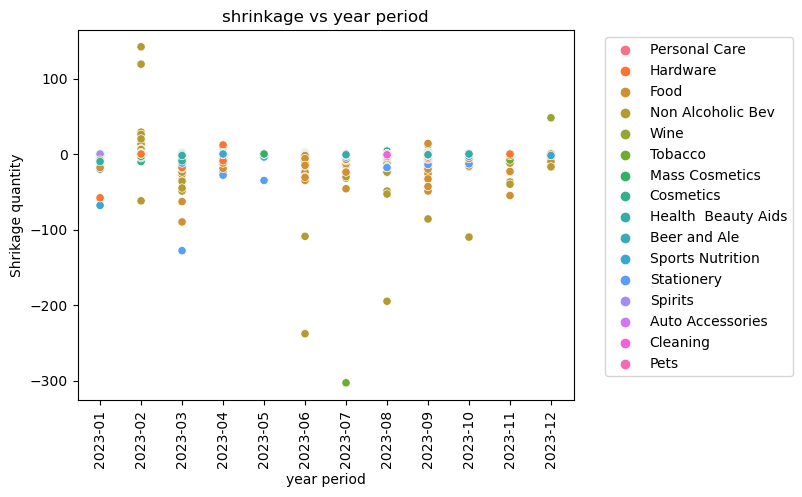

import ipywidgets as widgets
from IPython.display import display
import pandas as pd
import numpy as np
import os
import matplotlib.pyplot as plt
import seaborn as snsdata = pd.read_csv("INV_ADJ_ANAL.csv")DDD = []
def create_dropdown(opts, caption='Col:'):
dropdown = widgets.Dropdown(
options=opts,
value='-',
description=caption,
disabled=False,
)
dropdown.observe(on_dropdown_change, names='value')
dropdown.ind = None
return dropdown
def on_dropdown_change(change):
for i, dd in enumerate(DDD):
dd.ind = i
if change['owner'].ind % 2:
#VAL SELECTORS
if change['new'] != '-':
if change['owner'].ind == len(DDD)-1:
opts = ['-'] + [q for q in data.columns]
new_dropdown = create_dropdown(opts)
display(new_dropdown)
DDD.append(new_dropdown)
else:
pass
else:
#COL SELECTORS
if change['new'] != '-':
opts = ['-'] + data[change.new].unique().tolist()
new_dropdown = create_dropdown(opts, 'Val:')
display(new_dropdown)
DDD.append(new_dropdown)
else:
DDD[change['owner'].ind + 1].close()
del DDD[change['owner'].ind + 1]
if change['owner'].ind != len(DDD)-1:
DDD[change['owner'].ind].close()
del DDD[change['owner'].ind]
def create_visual(feature, data):
sns.scatterplot(x = data["PERIOD"], y = data["TY_QTY"], hue = feature, data = data)
title = f"shrinkage vs year period"
plt.title(title)
plt.xlabel("year period")
plt.ylabel(f"Shrikage quantity")
plt.legend(bbox_to_anchor=(1.05, 1), loc='upper left')
plt.xticks(rotation='vertical')
plt.show()
# Create the initial dropdown and display it
initial_dropdown = create_dropdown(opts = ['-'] + [q for q in data.columns])
DDD.append(initial_dropdown)
display(initial_dropdown)dcopy = data
last = None
cond = True
for i, v in enumerate(DDD):
if i % 2:
cond &= (dcopy[last] == v.value)
else:
last = v.value
dcopy[cond]| COMMAND_CD | SITE_ID | ADJUSTMENT_CATEGORY | DESCRIPTION | DIVISION | LOB_DESC | DEPT_DESC | CLASS | SUB_CLASS | MERCHANDISING_YEAR | MERCHANDISING_PERIOD | PERIOD | TY_QTY | TY_VALUE | LY_QTY2 | LY_VALUE2 | LM_QTY3 | LM_VALUE3 | |
|---|---|---|---|---|---|---|---|---|---|---|---|---|---|---|---|---|---|---|
| 173720 | PNM | 14100 | Shrink | 300-ON HAND CORRECTION | Consumables | Personal Care | PERSNL CARE ELECTRIC | 1300 - ORAL HYGIENE | 1301 - TOOTHBRUSHES | 2023 | 1 | 2023-01 | -1 | (47.99) | - | - | - | - |
| 173727 | PNM | 14100 | Shrink | 300-ON HAND CORRECTION | Consumables | Hardware | GENERAL HARDWARE | 1200 - LIGHT BULBS | 1201 - INCANDESCENT | 2023 | 1 | 2023-01 | -2 | (5.98) | - | - | - | - |
| 173927 | PNM | 14100 | Shrink | 300-ON HAND CORRECTION | Consumables | Food | DRY GROCERY | 1500 - NUTS & SEEDS | 1501 - NUTS | 2023 | 1 | 2023-01 | -1 | (0.89) | - | - | - | - |
| 174602 | PNM | 14100 | Shrink | 300-ON HAND CORRECTION | Consumables | Non Alcoholic Bev | NON-ALCOHOLIC BEVERAGES | 1100 - CSD | 1104 - 20OZ FLAVORED REG | 2023 | 1 | 2023-01 | -20 | (39.80) | - | - | - | - |
| 174693 | PNM | 14100 | Shrink | 300-ON HAND CORRECTION | Consumables | Wine | WINE | 2100 - POPULAR | 2110 - MOSCATO | 2023 | 1 | 2023-01 | 0 | - | - | - | (1.00) | (9.99) |
| ... | ... | ... | ... | ... | ... | ... | ... | ... | ... | ... | ... | ... | ... | ... | ... | ... | ... | ... |
| 450659 | PNM | 14100 | Shrink | 300-ON HAND CORRECTION | Consumables | Cosmetics | BATH AND BODY | 5900 - COCOA BROWN | 5901 - BODY | 2023 | 12 | 2023-12 | 0 | - | (1.00) | (4.94) | - | - |
| 450859 | PNM | 14100 | Shrink | 301-CYCLE COUNT | Consumables | Stationery | GREETING CARDS | 1000 - GREETING CARDS | 1003 - WEDDING/ANNIVERSARY | 2023 | 12 | 2023-12 | 0 | - | - | - | (2.00) | (5.78) |
| 450936 | PNM | 14100 | Shrink | 300-ON HAND CORRECTION | Consumables | Cosmetics | PRESTIGE FRAGRANCE | 1000 - HFC PRESTIGE | 1007 - FRAGRANCE MEN | 2023 | 12 | 2023-12 | 0 | - | (1.00) | (53.00) | - | - |
| 451894 | PNM | 14100 | Shrink | 300-ON HAND CORRECTION | Consumables | Food | GOURMET FOOD/CANDY | 1100 - HOLIDAY GOURMET | 1101 - HOLIDAY GOURMET | 2023 | 12 | 2023-12 | 0 | - | - | - | (11.00) | (26.89) |
| 452211 | PNM | 14100 | Shrink | 301-CYCLE COUNT | Consumables | Sports Nutrition | SPORT NUTRITION | 1200 - BARS | 1202 - PROTEIN | 2023 | 12 | 2023-12 | -2 | (0.88) | - | - | - | - |
1753 rows × 18 columns
filtered_data = dcopy[cond]
create_visual(filtered_data["LOB_DESC"], filtered_data)